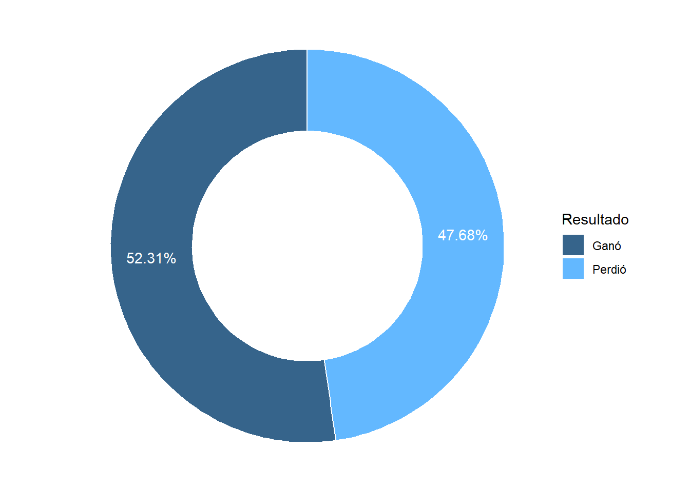
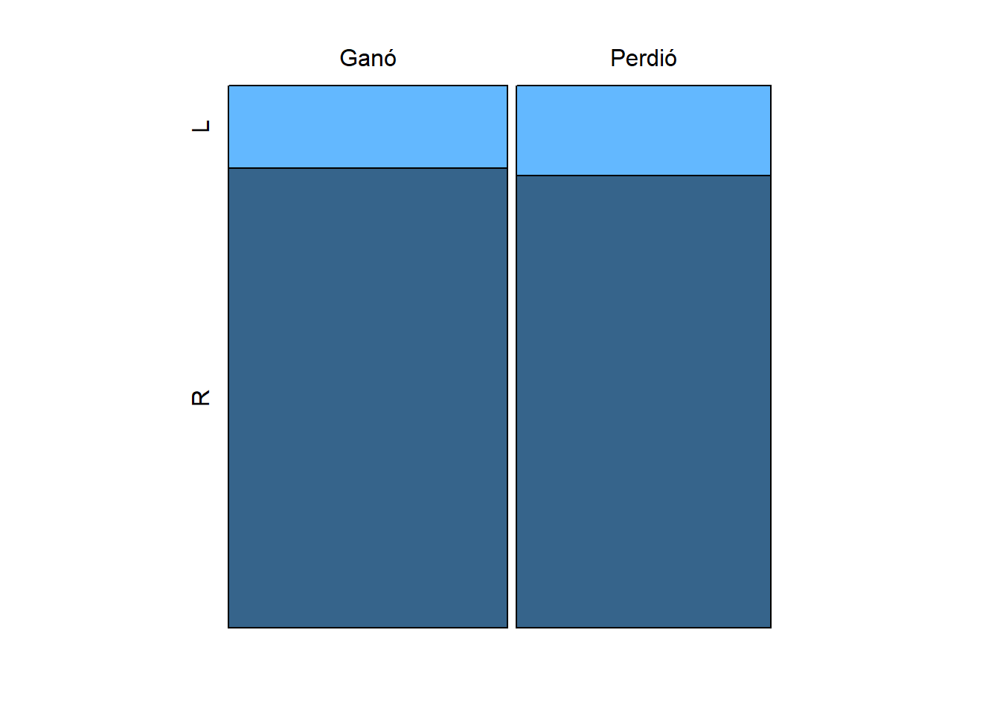
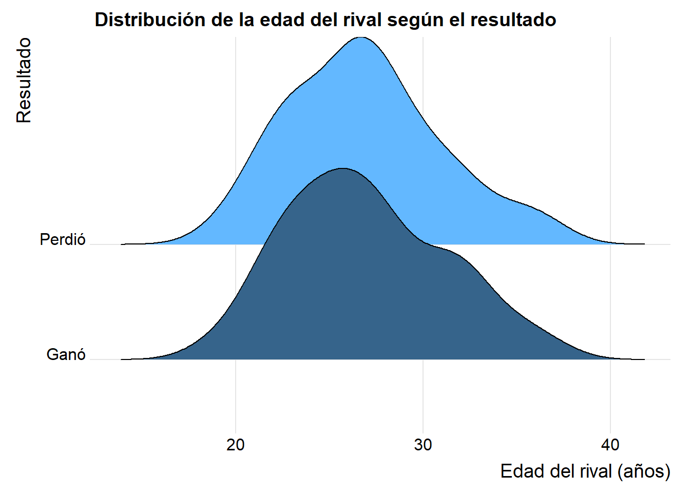
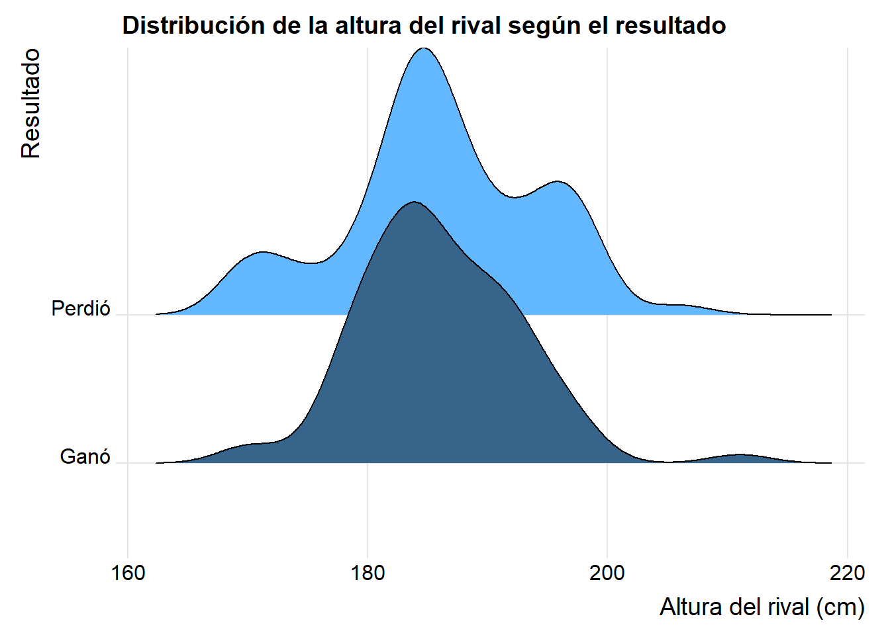
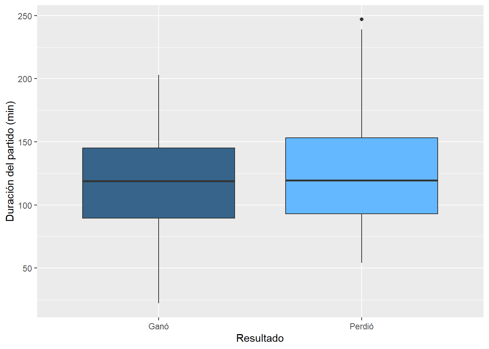
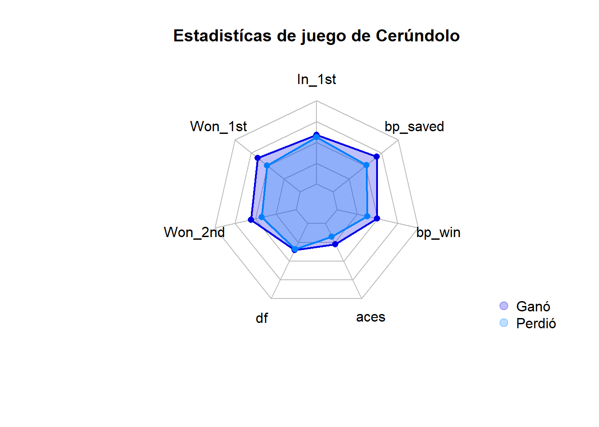
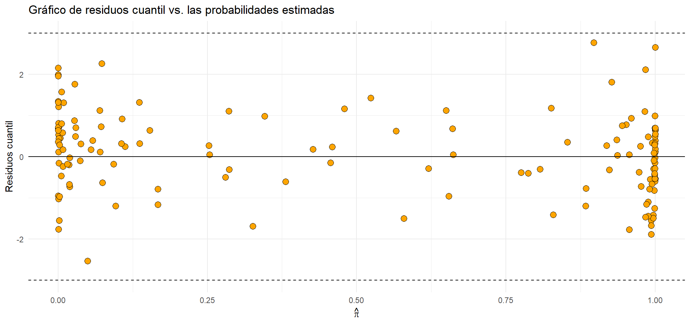
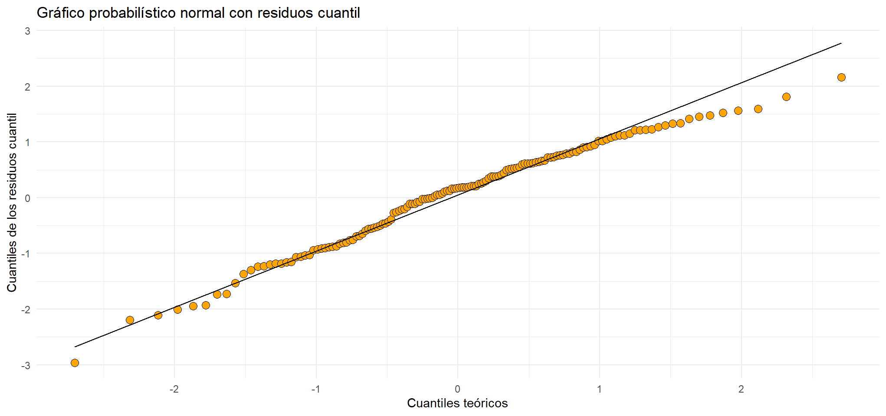
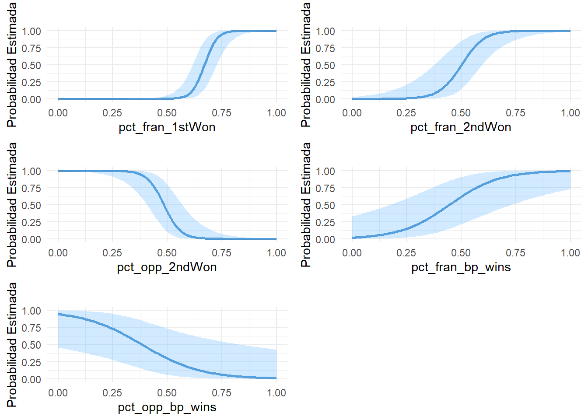

Trabajo Práctico Modélos Lineales Generalizados: Análsis de Francisco Cerúndolo
Simón Gazze - Manuel Moresi
Introducción
El tenis es uno de los deportes más populares del mundo, jugado por millones de personas a lo largo de todo el planeta, y se caracteriza por la destreza técnica, el esfuerzo físico y el análisis estratégico que requiere.
A nivel profesional, el circuito mas prestigioso es el de la ATP (Association of Tennis Professionals), en donde estan los jugadores mas prestigiosos del planeta, compitiendo en diferentes torneos de diferentes categorías y superficies (polvo de ladrillo, cesped y canchas duras). En este circuito existe un ranking de jugadores, el cual los ubica segun sus resultados en el año, y se actualiza cada semana, siendo la posicion nº 1 el mejor tenista de la actualidad.
Argentina ha producido una gran cantidad de tenistas destacados a lo largo de los años, y uno de los más prometedores de la actualidad es Francisco Cerúndolo. Nacido el 13 de agosto de 1998 en Buenos Aires, Cerúndolo ha ascendido rápidamente en el ranking ATP gracias a su consistencia, habilidades técnicas y mentalidad competitiva. Su estilo de juego, caracterizado por un potente golpe de derecha y su movilidad en la cancha, lo ha ayudado a destacarse en torneos importantes, especialmente en superficies de polvo de ladrillo, donde ha tenido varios de sus mejores desempeños.
Cerúndolo ha logrado consolidarse entre los mejores tenistas argentinos de la nueva generación, mostrando gran potencial tanto en torneos nacionales como internacionales. En 2021, dio un gran paso al alcanzar la final del ATP de Buenos Aires, un logro que le permitió ingresar a la élite del tenis mundial. A lo largo de su carrera, ha demostrado tener una gran capacidad para adaptarse a distintas situaciones de juego, enfrentando a rivales de alto nivel y obteniendo victorias clave que han acelerado su progreso en el circuito, las cuales incluyen 3 titúlos ATP, en Bastad 2022, Eastbourne 2023 y Umag 2024.
En este informe, se va a trabajar con una base de datos de 146 partidos, todos los partidos de la carrera de Fran desde su debut en 2020 hasta mayo del 2024 (no icluye el mencionado titulo en Umag de ese año) y cuenta con las siguientes variables:
surface: superficie del partido
tourney_level: nivel del torneo
winner_name: nombre del ganador
loser_name: nombre del perdedor
best_of: al mejor de cuantos sets fue el partido
round: ronda del torneo en la cual se jugó el partido
minutes: duración del parido en minutos
fran_win: variable indicadora de si Cerúndolo ganó o no el partido
opp_hand: mano habil del rival
opp_age: edad del rival
opp_ht: altura del rival
opp_rank: ranking del rival
fran_rank: ranking de Cerúndolo
dif_rank: diferencia de ranking entre Cerúndolo y el rival
fran_age: edad de Cerúndolo
pct_fran_1stIn: porcentaje de primeros servicios adentro de Cerúndolo
pct_opp_1stIn: porcentaje de primeros servicios adentro del rival
pct_fran_1stWon: porcentaje de primeros servicios ganados de Cerúndolo
pct_opp_1stWon: porcentaje de primeros servicios ganados del rival
pct_fran_2ndWon: porcentaje de segúndos servicios ganados de Cerúndolo
pct_opp_2ndWon: porcentaje de segúndos servicios ganados del rival
pct_fran_df: porcentaje de doble faltas sobre todos los puntos de servicio de Cerúndolo
pct_opp_df: porcentaje de doble faltas sobre todos los puntos de servicio del rival
pct_fran_ace: porcentaje de aces sobre todos los puntos de servicio de Cerúndolo
pct_opp_ace: porcentaje de aces sobre todos los puntos de servicio del rival
pct_fran_bp_saved: porcentaje de break points salvados de Cerúndolo
pct_opp_bp_saved: porcentaje de break points salvados del rival
pct_fran_bp_wins: porcentaje de break points ganados de Cerúndolo
pct_opp_bp_wins: porcentaje de break points ganados del rival
Objetivos
El objetivo de este trabajo es modelar la probabilidad de que Cerúndolo gane o no un partido en el circuito, basandose en algunas de las variables ya mencionadas. El análisis de estos factores no solo permite entender mejor los resultados, sino que también ayuda a prever cómo podría desenvolverse en futuros encuentros, lo que es útil tanto para entrenadores como para analistas deportivos.
En resumen, Francisco Cerúndolo es una figura clave en el tenis argentino actual, y su evolución en el circuito profesional será de gran interés para quienes siguen el deporte, y lo que se buscará en este informe es detallar las claves en esta evolución.
Análisis descriptivo
Proporcion de victorias
Se puede observar que Fran ganó el 52.31% de sus partidos a lo largo de su carrera, lo cual es un gran desempeño para un jugador en sus primeros años en el circuito.
Resultados por superficie
Se puede apreciar que la mayor cantidad de partidos los jugó en polvo de ladrillo, algo común en jugadores argentinos, y muy pocos partidos en cesped, ya que es la superficie con menos torneos en el circuito. En cuanto a cantidad de victorias, se ve que la superficie que mas ganó fue en polvo de ladrillo.
| Ganó | Perdió | |
|---|---|---|
| Clay | 0.56 | 0.44 |
| Grass | 0.58 | 0.42 |
| Hard | 0.45 | 0.55 |
Y en la Tabla 1, se ve que tanto en polvo de ladrillo como en cesped tiene un record positivo (más victorias que derrotas), en cambio en canchas duras posee un record negativo.
Resultados por ronda
| Ganó | Perdió | |
|---|---|---|
| RR | 3 | 5 |
| R128 | 6 | 4 |
| R64 | 15 | 9 |
| R32 | 22 | 21 |
| R16 | 18 | 17 |
| QF | 9 | 9 |
| SF | 4 | 5 |
| F | 2 | 2 |
En la Tabla 1, se puede ver que tiene un record equilibrado en cada una de las rondas que se juegan dentro de los diferentes torneos del circuito, destacando su record de 2 ganados y 2 perdidos en finales, y asi obteniendo sus únicos 2 titulos ATP hasta el momento. Se puede sospechar que la ronda en la cual juegue Frank, no parece influir en la probablidad de conseguir una victoria.
Resultados según la mano habil del rival

Vemos que la mayor cantidad de jugadores en el circuito son derechos, por lo que se observa que la mayor cantidad de rivales de fran son derechos, mientras que vemos que la proporcion de victorias y derrotas es similar tanto para jugadores diestros como para los zurdos. Lo cual nos da indicios de que esta variable no parecería influir en la respuesta.
Distribución de la edad y la altura del rival según el resultado


Tanto la edad como la altura del rival no parecen ser muy influyentes a la hora de evidenciar la posibilidad de un resultado. Ver si se puede agregar una linea punteada que indique la media, o ver si se puede hacer interactivo
Distribución de la duracion de los partidos según el resultado

Al observar las distribuciones en la duracion de los partidos que gano y que perdio, parecen no diferir demasiado, por lo que podria no ser un factor influyente en la probabilidad de ganar un partido.
Distribución del ranking del rival según el resultado
Se observan distribuciones en los rankings de los oponentes de Fran asimetricas a la derecha, tanto si gana como si pierde. Esto es debido a que en pocas competiciones (por ejemplo Copa Davis o Grand Slams) participan jugadores de menor categoria, pero la gran mayoria de los jugadores del circuito se encuentran dentro del top 150 del ranking.
La mediana del ranking de los oponentes cuando Fran gana es de 61, mientras que cuando pierde de 36, lo que muestra que el ranking podria ser decisivo a la hora de analizar la probabilidad de ganar un partido.
Resultados según el nivel del torneo

La mayoría de sus partidos y victorias fueron en los torneos de menor nivel del circuito (ATP 250 y ATP 500). Al tener proporciones de victorias parecidas en todos los niveles de torneos, parece no influir el nivel del torneo en la variable respuesta.
Radar chart para estadísticas del juego según el resultado


Modelo Estadístico
Selección de variables
Dejamos solo las variables de interes
Planteamos todos los modelos univariados y vemos que variables son significativas para el modelo
Paso a paso
Attaching package: 'MASS'The following object is masked from 'package:plotly':
selectThe following object is masked from 'package:dplyr':
selectLuego de una larga y detallada selección de modelo, se retienen las siguientes variables: Edad del oponente, porcentaje de puntos ganados con el primer servicio, porcentaje de puntos ganados del rival con el primer servicio, porcentaje de puntos ganados por el rival con el segundo servicio, porcentaje de puntos de break point ganados por Fran y el porcentaje de puntos de break point ganados por el rival.
La edad del rival tiene un p_value del test de wald de 0.1, podríamos ver si es realmente significativa para el modelo a través de un test de razón de verosimilitud
Adecuación de la función de enlace
Test de hipótesis
Parece ser adecuada la funcion de enlace
Análisis de residuos
Evaluación de la componente sistemática
# Residuos cuantil
rQ.final <- qresid(modelo_final)
### Gráfico de residuos cuantil vs. probabilidades estimadas (ajuste logit)
G1 <- ggplot(cerundolo_modelo, aes(y = rQ.final, x = fitted(modelo_final))) +
geom_point(fill = "orange", shape = 21, size = 3) +
geom_hline(yintercept = 0) + ylim(-3, 3) +
geom_hline(yintercept = -3, linetype = "dashed") +
geom_hline(yintercept = 3, linetype = "dashed") +
labs(title = "Gráfico de residuos cuantil vs. las probabilidades estimadas", x = expression(hat(pi)), y = "Residuos cuantil") +
theme_minimal()
G1
Evaluación de la componente aleatoria
Mediante un gráfico QQ puede evaluarse si la distribución supuesta es adecuada. la distribucion de la variable latente?
# Gráfico QQ
G2 <- ggplot(cerundolo_modelo, aes(sample = rQ.final)) +
stat_qq(distribution = qnorm, fill = "orange", shape = 21, size = 3) +
stat_qq_line() +
labs(title = "Gráfico probabilístico normal con residuos cuantil", x = "Cuantiles teóricos", y = "Cuantiles de los residuos cuantil") +
theme_minimal()
G2
Evaluación de Linealidad
El modelo final resulta
corrplot 0.92 loaded pct_fran_1stIn pct_opp_1stIn pct_fran_1stWon pct_opp_1stWon
pct_fran_1stIn 1.00 0.13 -0.04 -0.13
pct_opp_1stIn 0.13 1.00 -0.20 0.03
pct_fran_1stWon -0.04 -0.20 1.00 -0.04
pct_opp_1stWon -0.13 0.03 -0.04 1.00
pct_fran_2ndWon 0.07 -0.05 0.10 -0.09
pct_opp_2ndWon -0.14 0.09 -0.15 0.14
pct_fran_bp_wins -0.02 -0.17 0.03 -0.27
pct_opp_bp_wins -0.07 0.09 -0.23 0.17
pct_fran_2ndWon pct_opp_2ndWon pct_fran_bp_wins
pct_fran_1stIn 0.07 -0.14 -0.02
pct_opp_1stIn -0.05 0.09 -0.17
pct_fran_1stWon 0.10 -0.15 0.03
pct_opp_1stWon -0.09 0.14 -0.27
pct_fran_2ndWon 1.00 -0.13 0.04
pct_opp_2ndWon -0.13 1.00 -0.28
pct_fran_bp_wins 0.04 -0.28 1.00
pct_opp_bp_wins -0.29 0.19 -0.13
pct_opp_bp_wins
pct_fran_1stIn -0.07
pct_opp_1stIn 0.09
pct_fran_1stWon -0.23
pct_opp_1stWon 0.17
pct_fran_2ndWon -0.29
pct_opp_2ndWon 0.19
pct_fran_bp_wins -0.13
pct_opp_bp_wins 1.00
Loading required package: carData
Attaching package: 'car'The following object is masked from 'package:dplyr':
recodeThe following object is masked from 'package:purrr':
some GVIF Df GVIF^(1/(2*Df))
pct_fran_1stWon 2.297297 1 1.515684
cat2 5.507526 4 1.237712
pct_fran_2ndWon 2.480265 1 1.574886
pct_opp_2ndWon 2.261995 1 1.503993
pct_fran_bp_wins 2.098956 1 1.448777
pct_opp_bp_wins 1.522947 1 1.234077
Call:
glm(formula = fran_win1 ~ pct_fran_1stWon + cat2 + pct_fran_2ndWon +
pct_opp_2ndWon + pct_fran_bp_wins + pct_opp_bp_wins, family = binomial(link = "logit"),
data = cerundolo_modelo)
Coefficients:
Estimate Std. Error z value Pr(>|z|)
(Intercept) -16.233 6.669 -2.434 0.014934 *
pct_fran_1stWon 36.196 8.565 4.226 2.38e-05 ***
cat2(0.6,0.65] -3.867 1.637 -2.363 0.018141 *
cat2(0.65,0.7] -5.630 1.819 -3.096 0.001963 **
cat2(0.7,0.75] -5.209 1.516 -3.436 0.000591 ***
cat2(0.75,Inf] -12.432 2.903 -4.283 1.85e-05 ***
pct_fran_2ndWon 19.616 5.811 3.376 0.000736 ***
pct_opp_2ndWon -26.492 7.788 -3.402 0.000670 ***
pct_fran_bp_wins 8.884 3.206 2.771 0.005588 **
pct_opp_bp_wins -7.402 3.255 -2.274 0.022946 *
---
Signif. codes: 0 '***' 0.001 '**' 0.01 '*' 0.05 '.' 0.1 ' ' 1
(Dispersion parameter for binomial family taken to be 1)
Null deviance: 202.152 on 145 degrees of freedom
Residual deviance: 43.976 on 136 degrees of freedom
AIC: 63.976
Number of Fisher Scoring iterations: 8plantear el modelo estimado
Interpretación y Resultados
Razones de Odds
Variables continuas
Graficamos las curvas estimadas para las distintas variables explicativas con las que contamos

Observamos que la tasa de cambio en la probabilidad de victoria de Fran será mas alta para la variable “Porcentaje de puntos realizados con el primer servicio”.
Variable incorporada con Dummies
Predicciones
Para trabajar con las predicciones, se trabaja con una base de datos de los 24 partidos de Fran, luego del último partido cargado en la base principal
| Perdió | Ganó | |
|---|---|---|
| Perdió | 9 | 1 |
| Ganó | 2 | 12 |